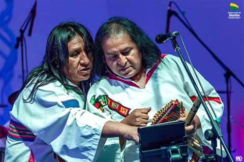

K'ala Marka fue formada en 1984, en la ciudad de La Paz, Bolivia por Hugo Gutiérrez (voz y charango) y Rodolfo Choque (vientos) como parte de un proyecto de investigación de música andina, acompañando al Ballet Folclórico de Cochabamba en giras internacionales.
Entre 1986 y 1987, graba sus primeros álbumes, comenzando con «Khochusiñani», distribuido en casete y consistiendo principalmente de canciones tradicionales y versiones.
En 1989, lanza su primer álbum con canciones de composición original, incorporando influencias de música popular contemporánea, dando inicio a su discografía original que en la actualidad consiste de más de una docena de álbumes.
En 1991, participa de la grabación del álbum «Tribual-pursuit», del grupo Kaoma.
En 2007, graba el DVD «Nuevo Mundo» en Francia, incluyendo un concierto en vivo junto varios artistas locales tales como Francis Cabrel.
En 2010, gana un juicio contra el grupo alemán "Cordalis", acusando a éste de plagiar la canción «Cuando florezca el chuño».1

El aniversario 40 de Kala Marka será por todo lo alto. Un libro, un documental y la reedición de sus primeros discos están en la lista de proyectos que alistan para la celebración. La información fue confirmada en exclusiva a La Razón.
El grupo nacional fue el invitado especial del programa Piedra, Papel y Tinta —que se emite vía streaming y a través de la red DTV—, donde ofreció un show y contó sus planes para 2024.
José Abreu (percusión), Benjo Chambi (batería), Edwin Mendoza (bajo), Fernando Gutiérrez (quena), Freddy Huanca (guitarra eléctrica), y los fundadores Rodolfo Choque (vientos) y Hugo Gutiérrez (charango y voz) llegaron hasta los estudios de este medio de comunicación.
“Es el primer programa que hacemos en vivo en Bolivia”, resaltó la voz de Kala Marka, antes de hablar sobre los 40 años que el grupo cumplirá el próximo año.
Los músicos comenzaron la presentación con Nuestro amor a la tierra, una de sus canciones más conocidas. Esta y otras composiciones fueron parte de su reciente concierto en el Teatro Caupolicán de Chile, donde los artistas opinan que “hemos abierto las puertas para la música boliviana”.
Próximamente compartirán imágenes y videos del concierto a través de sus plataformas digitales.